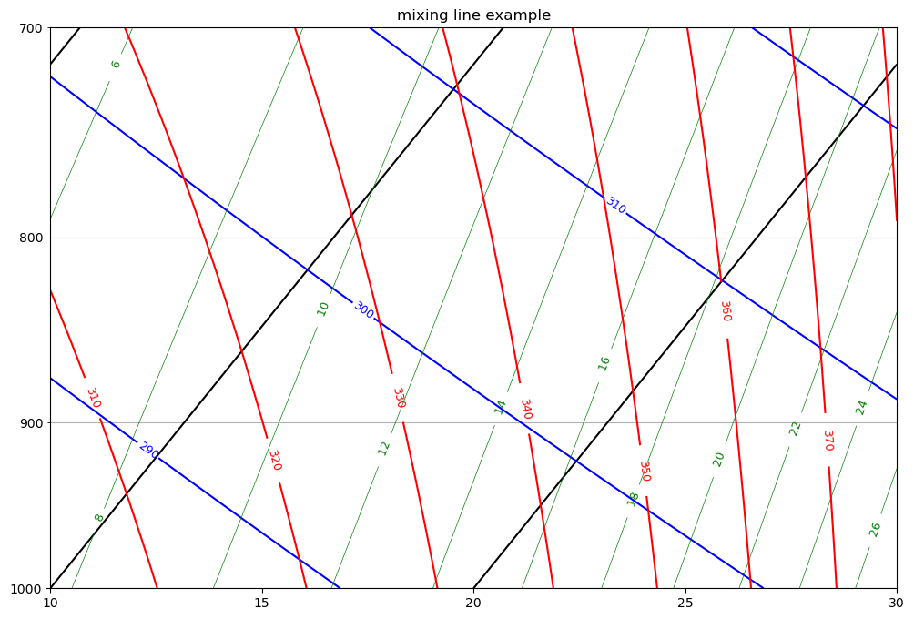
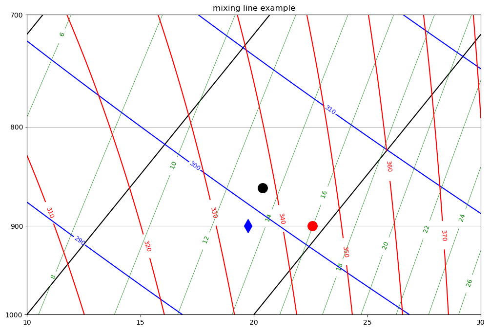
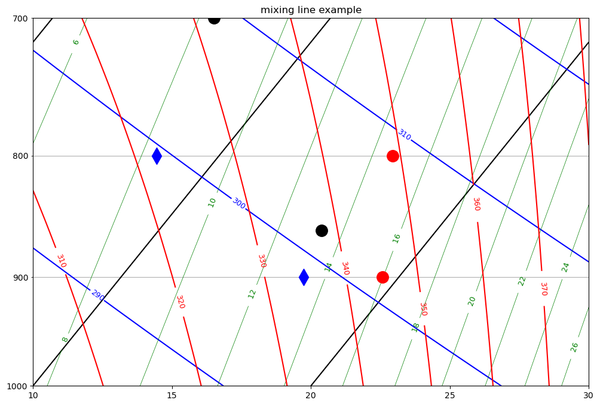

Mixing line example#
Download mixing_line_example.ipynb
This is a demonstration, no handin required
Draw a tephigram with points at 800 and 700 hPa#
We want a mxing line between two points. The lower point has a \(\theta_e\) of 338 K and a LCL of 860 hPa, and the upper point has a \(\theta_e\) of 332 K and an LCL of 700 hPa. We want to draw the lower point at 900 hPa and the upper point at 800 hPa. The intermediate points on this line show the thermodynamic state of all mixtures of air at 900 hPa with air at 800 hPa
## Blank tephigram
from a405.thermo.thermlib import (find_Tmoist,find_rsat,
find_Td,tinvert_thetae,
convertTempToSkew,find_lcl)
import a405.thermo.thermlib as tl
from a405.thermo.constants import constants as c
from matplotlib import pyplot as plt
import numpy as np
pa2hPa=1.e-2
from a405.skewT.fullskew import makeSkewWet
fig, ax = plt.subplots(1, 1, figsize=(12, 8))
ax, skew = makeSkewWet(ax,corners=[10,30])
ax.set(ylim=[1000,700])
skewLimits = convertTempToSkew([10, 30], 1.e3, skew)
out=ax.set(xlim=skewLimits)
ax.set_title("mixing line example");

Add mixing line points#
Find coords of lower point at its LCL#
pa2hpa=1.e-2
kg2g = 1.e3
press=860.e2 #Pa LCL
thetae_900=338. #K
Temp_860=find_Tmoist(thetae_900,press)
rv_860=find_rsat(Temp_860,press) #just saturated at the LCL
rv_900 = rv_860 #vapor is conserved
Tdew_860=Temp_860
print((f"temp,Tdew,rv at LCL press: {press*pa2hpa:0.1f} hPa\n"),
(f"Temp: {Temp_860- c.Tc:.1f} deg C\n" ),
(f"Tdew: {Tdew_860 - c.Tc:.1f} deg C\n"),
(f"rv: {rv_860*kg2g:.1f} g/kg"))
temp,Tdew,rv at LCL press: 860.0 hPa
Temp: 15.9 deg C
Tdew: 15.9 deg C
rv: 13.3 g/kg
Now bring it down a moist adiabat to 900 hPa#
Add the temperature and dewpoint to the chart
#
# now descend adiabatically to 900 hPa
#
press=900.e2
Temp_900,rv_900,rl_900=tinvert_thetae(thetae_900,rv_900,press)
Tdew_900=find_Td(rv_900,press)
print((f"temp,Tdew,rv at LCL press: {press*pa2hpa:0.1f} hPa\n"),
(f"Temp: {Temp_900- c.Tc:.1f} deg C\n" ),
(f"Tdew: {Tdew_900 - c.Tc:.1f} deg C\n"))
#
# draw these on the sounding at 900 hPa as a red circle and blue diamond
#
xplot=convertTempToSkew(Temp_900 - c.Tc,press*pa2hPa,skew)
bot=ax.plot(xplot, press*pa2hPa, 'ro', markersize=14, markerfacecolor='r')
xplot=convertTempToSkew(Tdew_900 - c.Tc,press*pa2hPa,skew)
bot=ax.plot(xplot, press*pa2hPa, 'bd', markersize=14, markerfacecolor='b')
#
# add the LCL
#
press=860.e2
xplot=convertTempToSkew(Temp_860 - c.Tc,press*pa2hPa,skew)
bot=ax.plot(xplot, press*pa2hPa, 'ko', markersize=14, markerfacecolor='k')
display(fig)
temp,Tdew,rv at LCL press: 900.0 hPa
Temp: 19.4 deg C
Tdew: 16.6 deg C

Find coords of upper point at its LCL#
LCL is 700 hPa and \(\theta_e\) is 332 K
press=700.e2 #LCL Pa
thetae_800=332. #K
Temp_700=find_Tmoist(thetae_800,press)
Tdew_700 = Temp_700
rv_700=find_rsat(Temp_700,press)
print((f"temp,Tdew,rv at LCL press: {press*pa2hpa:0.1f} hPa\n"),
(f"Temp: {Temp_700- c.Tc:.1f} deg C\n" ),
(f"Tdew: {Tdew_700- c.Tc:.1f} deg C\n"),
(f"rv: {rv_700*kg2g:.1f} g/kg\n"))
# get the temperature and dewpoint at 800 hPa
#
press=800.e2
rv_800=rv_700 #total water is conserved
Temp_800,rv_800,rl=tinvert_thetae(thetae_800,rv_800,press)
Tdew_800=find_Td(rv_800,press)
print((f"temp,Tdew,rv at LCL press: {press*pa2hpa:0.1f} hPa\n"),
(f"Temp: {Temp_800- c.Tc:.1f} deg C\n" ),
(f"Tdew: {Tdew_800 - c.Tc:.1f} deg C\n"))
#
# put these points on the sounding at 800 hPa
#
xplot=convertTempToSkew(Temp_800 - c.Tc,press*pa2hPa,skew)
bot=ax.plot(xplot, press*pa2hPa, 'ro', markersize=14, markerfacecolor='r')
xplot=convertTempToSkew(Tdew_800 - c.Tc,press*pa2hPa,skew)
bot=ax.plot(xplot, press*pa2hPa, 'bd', markersize=14, markerfacecolor='b')
press = 700e2
xplot=convertTempToSkew(Temp_700 - c.Tc,press*pa2hPa,skew)
bot=ax.plot(xplot, press*pa2hPa, 'ko', markersize=14, markerfacecolor='k')
display(fig)
fig.savefig('mid-tephi.pdf')
temp,Tdew,rv at LCL press: 700.0 hPa
Temp: 5.8 deg C
Tdew: 5.8 deg C
rv: 8.3 g/kg
temp,Tdew,rv at LCL press: 800.0 hPa
Temp: 16.2 deg C
Tdew: 7.8 deg C

#x=
#y=
w=13.3
z=8.3
#thetae_mix = 0.5*x + 0.5*y
rv_mix = 0.5*w + 0.5*z
rv_mix
10.8